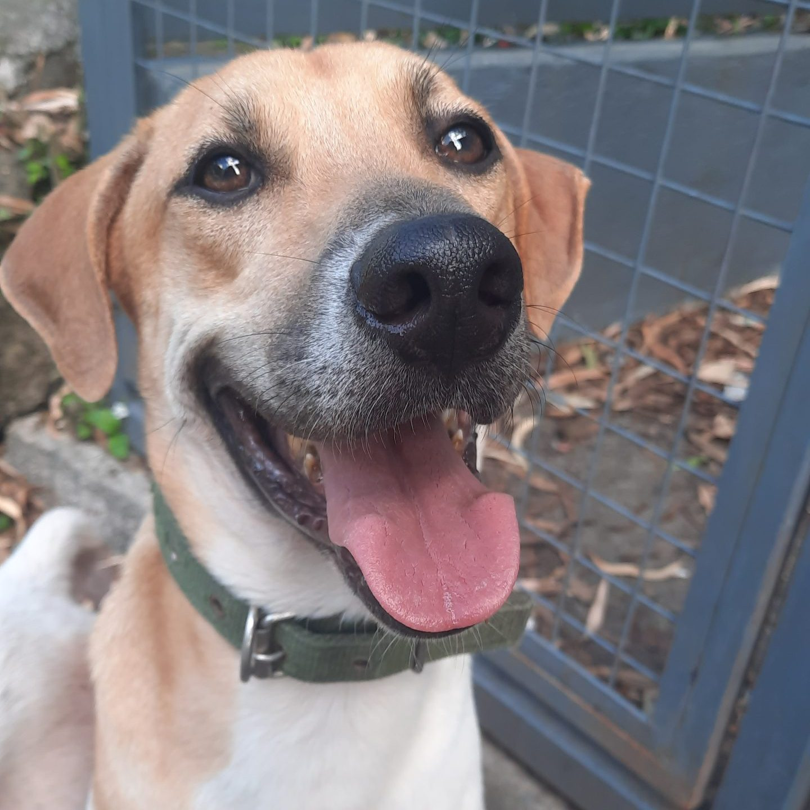

Our dogs
Meldy
If you are the type of dog owner that wants a 1-yr-old female Aspin that stays quiet at home, try to get to know Meldy. Meldy may be skittish and easily excited or nervous, but with the right home, she will calm down and get used to the love and care of a quiet human. Retirees will love Meldy as Meldy can be an only-dog who stays indoors all the time. Meldy will bark and alert her owners to intruders, as she is sensitive and easily anxious. The rest of the time, she will stay at home with her loving human parents and wait for petting and treats. Take a chance on Meldy, our female Scooby Doo.
Adopt now

Maureen
:
Just like a Facebook post by a pal, Post is easy to heart or like. He is a smart, trainable 1-yr-old Aspin who is still a bit skittish in unfamiliar surroundings. But just give him some time and love, and Post will show you his true, affectionate self.
Post was just recently rescued is a post office and we hope that he doesn’t wait too long for forever. He desperately needs a buddy or a family that will shower him with warmth and assure him that all is well in the world.
We know that somewhere out there, there’s a human that can make him smile more often and show him that he has nothing to fear. We hope they get to meet at the PAWS shelter someday!
Adopt now

Ciarisse
:
It was such a blessing to be able rescue this beautiful aspin, Blessing, from a hit-and-run incident in Anonas, and to restore him back to health. Blessing is a highly energetic dog that needs time to bond with humans, being a 8-yr-old rescue that has been through rough times.
Here, at PAWS, he is getting a second chance as our volunteers work to socialize him further. We’re hoping that a foster parent or adopter will appreciate how far he has come and give him the chance to continue his rehabiliation in a home setting
Adopt now
Doritia
:
A 3-yr-old Aspin rescued from nearby Fatima College, Fatima is very friendly and social. She loves to wag her tail and she warms up to people easily. Fatima loves her dog bed and can stay there while you work from home. She will surely enjoy sleeping in your bedroom as well if you give her a nice, comfy spot. She will make a great pet for a single person or a family.
Fatima has her best years ahead of her to spend with a human best friend. She just needs someone to give her a chance and adore her for life.
Adopt now
Rizza
:
Friendly dog alert! Delro desperately needs a loving forever-human with a deep need for companionship. Delro smiles a lot, as she is a happy and cheerful pet. She has had a long, sad history of getting bypassed for adoption due to a skin ailment that caused her fur to grow unevenly. But be warned! Delro’s love and loyalty transcend beauty, and a committed adopter will find themselves truly lucky. Please allow Delro into your home. It will be one the best decisions you will ever make!
Adopt now

Carlo
:
When Banoi shows you her happy face, you will surely be won over with delight. A 5-yr-old Aspin rescued in Marikina City during typhoon Ulysees, Banoi has been through difficulties in her life, but it does not change her friendly temperament. She loves pets and goes crazy for treats. She’s a happy, friendly dog who is also quite chill and not overly needy.
Adopt now

Cristine
:
Whitey may have looked like a healthy and happy stray dog, but in truth, he was in great pain. Someone attempted to castrate this poor boy by tying a rubber band tightly around his testicles. Thankfully, he received treatment at the shelter and is now fully recovered. Whitey is learning to trust humans again, and now he’s looking for a strong pack leader to give him a home.
Adopt now

Liza
:
Walter White was not yet born when he was rescued. That’s right! His momma, Menchie, was rescued inside UP Campus when she was pregnant. Because of Walter White’s shy nature, he’s the only one of his siblings still at the shelter. We hope that someone out there is willing to be his patient and dedicated best friend to help him become the friendly and playful doggo that he’s meant to be.
Adopt now
Jomar
:
There’s only one thing keeping this young, beautiful girl from being adopted, and that is her shy and skittish nature. She was rescued with her littermates as newborn puppies, and they have all been adopted. We are certain that being in a home with loving humans will help boost Tina’s confidence. We hope that she doesn’t have to wait long!
Adopt now